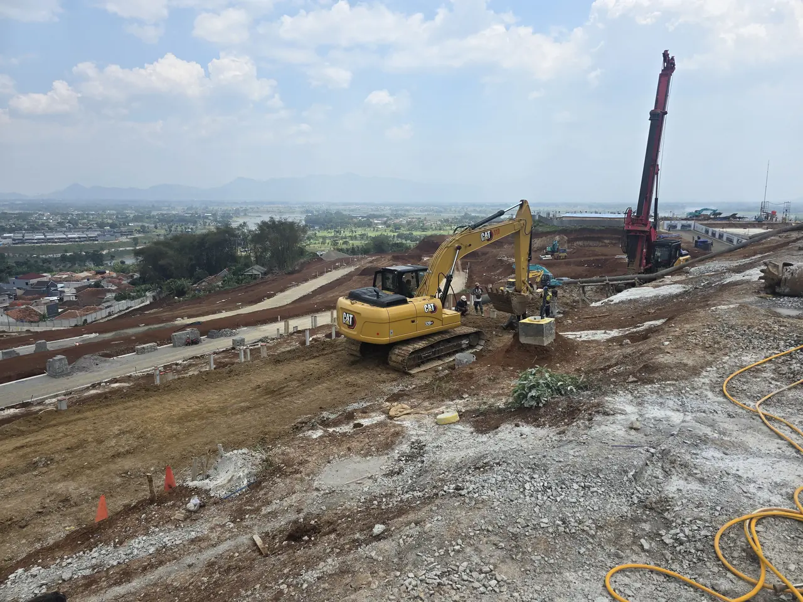
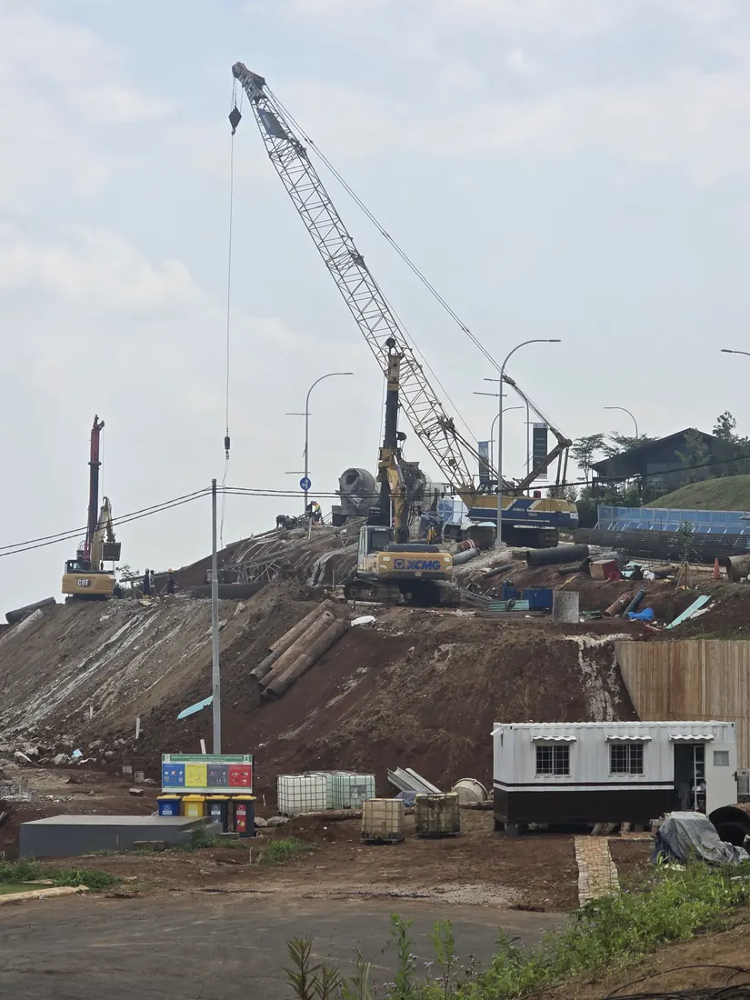

Tatar Surawisesa
Dinding secant pile untuk dua area di klaster Tatar Surawisesa, Kota Baru Parahyangan. Seluruhnya 338 titik tiang bor, dikerjakan dalam dua tahap sepanjang lima bulan.
Area 2 mencakup 175 titik: 87 primary pile Ø 600 mm dan 88 secondary pile Ø 800 mm, dengan jarak as-ke-as secondary 1.200 mm dan panjang efektif 20,10 meter. Area Club House mencakup 163 titik Ø 500 mm — 81 primary dan 82 secondary — berjarak 900 mm dengan panjang efektif 15,10 meter.
Primary pile memakai beton fc’ 12,5 MPa dan dibor lebih dulu; secondary pile fc’ 30 MPa kemudian memotongnya. Tumpang tindih terukur 100 mm di Area 2 dan 50 mm di Club House, sehingga dindingnya menerus tanpa celah. Posisi setiap tiang diukur ulang setelah pengeboran dan tercatat dalam piling record tersendiri.

Di lapangan
Oktober 2025
Proyek Lainnya
Rekam jejak lapangan


Diskusikan kebutuhan Anda
Belum yakin metode pondasi yang cocok? Ceritakan saja kondisi lapangan Anda — tim engineering kami senang membantu, tanpa komitmen apa pun.
WhatsApp: +62 811-902-590Sabtu 10.00–12.00
Minggu dan hari libur nasional tutup